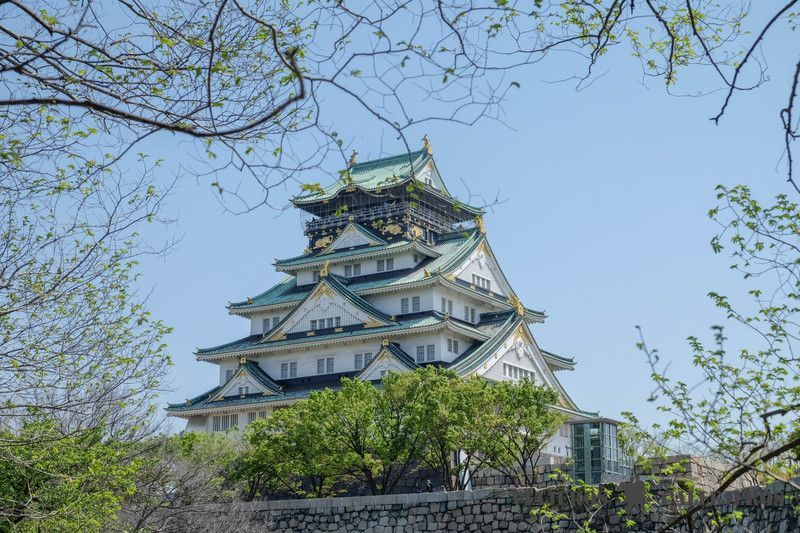
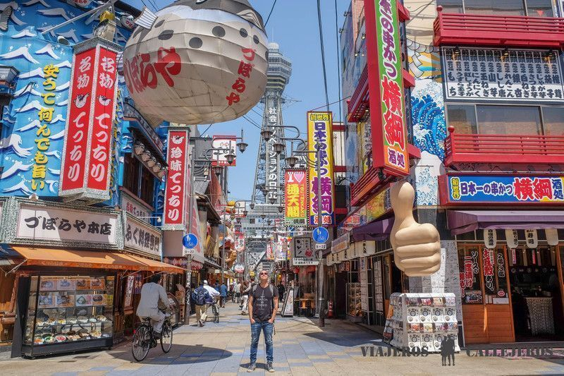
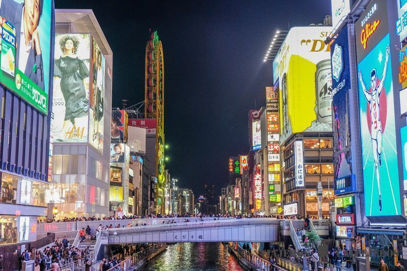

Osaka
En esta ciudad destaca la mezcla de su cultura milenaria japonesa, cuyas tradiciones permanecen hasta el
día de hoy,
con una modernidad tecnológica con la que parecerá que te encuentres en el futuro o en una película de
ciencia ficción.
Además de ser la tercera ciudad más grande de Japón, Osaka tiene el aeropuerto internacional de Kansai
muy cerca,
algo que la convierte en la puerta de entrada para muchos viajeros a Japón.
si es este tu caso, esto te permitirá dedicarle uno o dos días al inicio del ruta para visitar
sus lugares más interesantes o en cualquier caso, hacer una excursión desde Kioto con el tren de alta
velocidad.

Miluska: Para ahorrar dinero es importante reservar el Japan Rail
Pass en el que se incluyen todos estos trayectos además de la mayoría de trayectos
en tren por el país.
El Castillo de Osaka, rodeado por una gran fosa y por los bonitos jardines Nishinomaru, es otro de los lugares que visitar en Osaka imprescindibles. Este castillo fue construido en el siglo XVI, aunque pocos años después primero por una guerra y después por un incendio quedó destruido y olvidado hasta su reconstrucción en 1931. Su interior, además de tener un ascensor para subir los 8 pisos de altura cuenta con un pequeño museo.
El barrio de Shinsekai, en especial la zona que rodea la torre Tsutenkaku, es uno de los rincones como más encanto que se encuentran en la lista de los mejores lugares que ver en Osaka. Este barrio con unos 100 años de historia, se construyó utilizando como modelo la ciudad de París y la zona de Coney Island en Nueva York en el que destaca por ejemplo, la torre Tsutenkaku de 103 metros de altura, que era la entrada del parque de atracciones Luna Park.
Nipponbashi o Den Den Town, el barrio electrónico y de las tiendas de manga, es otro de los lugares que visitar en Osaka. En este barrio con un cierto parecido al de Akihabara en Tokio, encontrarás videojuegos y consolas de todos los años, figuras de series como Dragon Ball y de anime, máquinas recreativas como el popular pachinko y tiendas electrónicas con todo tipo de artículos antiguos y de última tecnología.
El Umeda Sky Building es un rascacielos de 173 metros de altura, que tiene dos torres simétricas de 40 pisos conectadas por una plataforma situada a 150 metros desde la que se obtienen una de las mejores vistas de Osaka. Además de las vistas panorámicas desde el Observatorio del Jardín Flotante, tiene una zona de restauración ideal en la que esperar el momento de la puesta de sol y de la iluminación de la ciudad.
El barrio de Dotonbori, famoso por sus neones y por el canal que lo cruza, es uno de los lugares que ver en Osaka más famosos. El mejor momento para visitarlo es por la noche, cuando se iluminan todas las pantallas publicitarias, no te pierdas la del Glico Man, y la actividad por todas las calles del barrio es frenética. A esta hora también se forman largas colas en los restaurantes para probar sus especialidades como el takoyaki, buñuelos rellenos de pulpo, el okonomiyaki, el cangrejo o el Kushiage, por lo que merece la pena, si quieres cenar aquí, venir pronto.
